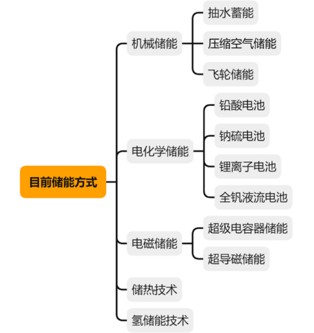
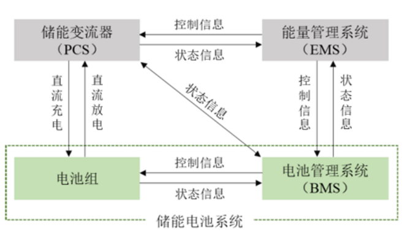
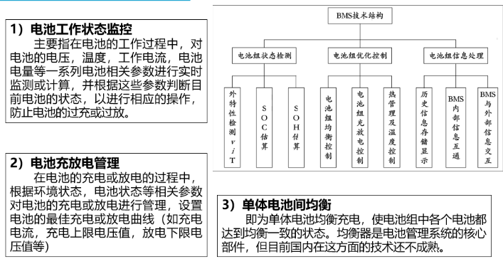
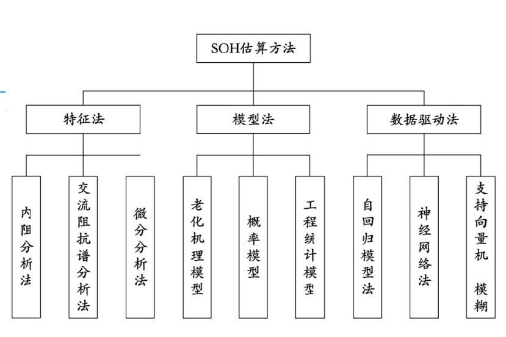
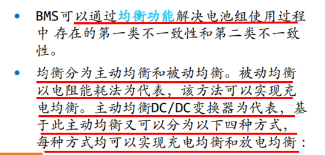
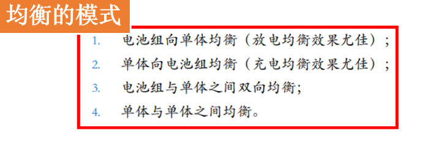

电池管理
第一章储能技术概述
1、请描述电力系统的基本网架？
电力系统的基本网架包括三级：输电网、变电网和配电网。
-
输电网：输电网是电力系统的骨干，通过高电压的输电线路将发电厂产生的电能送达给各个地方，包括输电线路和变电站。输电线路主要分为交流输电线路和直流输电线路。输电线路主体是高杆塔，其抗风能力高，不利于造成爆炸事故。变电站则是承接输电线路带来的高电压电力，转换为适合城市居民、企业等各类用户使用的低电压电力。
-
变电网：变电网主要是承认输电网的高电压电力，将电能按照规格转变为各类需要的特定电压电力，例如将220kV的电能转变成110kV的电能进行输配电。变电网中包括各种变压器和区域分站设备，通过组网控制，将链式电力升降。
-
配电网：配电网是指从变电站开始的低压电力配送，包括连接变电站和消费者的各类线路、变压器、变电器、消弧器、电表、配电线路及其它保护设备。配电网的主要任务是将发电厂产生的电力输送到电力用户家庭，工业用电、商业、公共场所、住宅等。
三级网架连接交错，通过变电站的封装和组装，把其各类电线连接起来，形成一张几乎全国连通的DV28线网。同时，通过线路的交错过滤，避免电网故障，提高电网的可靠性和安全性。电力系统的基本网架通过分布式电源、储能技术等多种新技术的应用，可以更好地履行电力供应、调度等职能，为整个社会进行生产和生活服务。
2、储能的主要方式有那些？电力储能分为那几类？

3、电力储能的应用领域包括那几类？
- 便携式储能、车载移动式储能、大容量固定式储能
4、电池储能系统的结构包括那几个部分？
- 完整的电化学储能系统主要由:电池组、电池管理系统( BMS).能量管理系统( EMS).储能变流器( PCS )以及其他电气设备构成。
- 电池组 :担任关键的储能角色,是储能系统最核心的构成部分;
- 电池管理系统BMS :担任感知角色,主要负责电池的监测、评估、保护以及均衡等;
- 能量管理系统EMS :担任决策角色,主要负责数据采集、网络监控和能量调度等;
- 储能变流器PCS :担任执行角色,主要功能为控制储能电池组的充电和放电过程,进行交直流的变换。
第二章（电工基础1）
1、为什么要大力发展储能技术？
发展储能技术是非常重要的，其原因主要包括以下几个方面：
-
解决能源矛盾：当下全球能源供需矛盾日益突出，储能技术则能够通过储存电能，以随时调整能量供需平衡的方式，解决能源矛盾问题。
-
改善电力质量：电能储存技术有助于提高电力系统的稳定运行能力和供电质量，保障电力质量和可靠性，更好地满足工业生产、社会居民和公共服务的需求。
-
促进可再生能源发展：储能技术与可再生能源相结合，可以解决可再生能源不稳定和不可控的问题，促进可再生能源的发展，降低化石燃料的消耗，有利于开发清洁能源，如太阳能、风能等。
-
降低能源成本：储能技术有助于利用低峰期的电能，可以减少电力的浪费，降低能源成本，提高供电效率，创造更多的经济价值。
-
增加能源安全：储能技术的发展有助于减少对外能源的依赖，增加能源安全，促进国家能源战略的顺利执行。
总之，随着能源问题的凸显和技术的不断进步，发展储能技术成为了当下重要的任务和趋势，有利于保障能源安全、改善能源质量、促进可再生能源发展和节约资源。
2、储能方式主要分为那几类？
储能方式主要分为以下几类：
-
电化学储能方式：电池是电化学储能方式的典型代表，这种方式通过将电荷储存在电极中，在需要时释放出来，常用于电通信、储能电站、光伏电站、风力发电站等。
-
机械储能方式：机械储能是指通过动力机械装置，将能量转化为物理的动量或者重力势能来储存，其典型代表是重力储能，如抽水储能电站。
-
热储能方式：热储能指的是将能量转化为热能，通过介质吸收并存储能量，再在需要的时候释放热能的一种方式。 典型的热储能技术为蓄热系统，如冷热储能系统、热泵储热系统等。
-
磁性储能方式：磁性储能指的是利用磁场产生的磁性势能来存储能量，并在需要的时候释放以产生电力的一种方式。 典型的磁性储能技术为超导储能器。
-
化学储能方式：化学储能指的是通过化学反应转化的化学能，将能量贮存起来，并在需要时释放出来，如将电能转化为氢贮存，利用燃料电池将氢化学能转化为电能。
综上所述，储能方式有多种类型，每种类型有其特点和应用。随着技术的不断进步和应用的不断拓展，研究和发展高效可靠的储能技术，对于实现能源的可持续发展是非常重要的。
3、电力系统储能的典型场景有那些？
电力系统储能的典型场景有以下几种：
-
太阳能/风能等再生能源储能：再生能源具有不稳定性和间歇性，随时可能因天气、环境等原因而发生波动，因此可通过储能技术来缓解再生能源波动性，提高电力系统可靠性。
-
峰谷调峰储能：由于用电量呈现峰谷波动特征，电网在峰值电量压力下会出现缺电瓶颈，此时可利用储能设备，将用电谷值电量储存，待峰值电量到来时再进行释放，缓解电力系统供需压力。
-
分布式能源储能：分布式能源有助于降低电网压力，可采用分散式储能方式，通过将太阳能、风能等分布式能源储存在锂离子电池、超级电容等设备中，以提高分布式能源的利用率。
-
电动汽车充电储能：利用电动汽车进行电网调峰。在充电过程中，储备能量可以通过电动汽车的车载储能电池进行暂时存储，当负荷增加时，再通过车载储能电池释放其储备的电能。
-
供电安全备份储能：为确保供电设备始终处于正常供电 status（在特定场合很重要），如果出现突发事故，储能设备就会为供电设备提供一定的电力输出，提高供电设备运行的可靠性和安全性。
综上所述，电力系统储能的典型场景主要是针对电力系统的供需平衡和调峰方面，如平衡再生能源波动、调峰、备份、储能等领域。利用储能技术可以有效提高电力系统的可靠性和稳定性，促进清洁能源的发展，实现可持续能源利用。
第二章 （电工基础2）
1、掌握基尔霍夫定律，了解电压电流的参考方向、关联参考方向，学会计算电路元件的功率，掌握发出或吸收功率的判断方法 2、掌握半导体材料的基本知识，学会辨别导体、半导体和绝缘体，掌握P型或N型半导体 3、掌握MOSFET的工作原理，包括导电沟道的形成过程
第三章 充放电控制技术
1、请描述储能系统的能量交换过程，包括：如何界定交流侧和直流侧的充放电状态？如何定义储能系统的效率？

2、熟悉DC-DC变流电路，掌握Buck电路和Boost电路的降压或升压原理，并计算输出电压与输入电压和占空比的关系
3、了解AC-DC变换电路，掌握交流直流转换的原理
第四章、主动均衡电路
1、为什么要进行主动均衡？
因为电池组中每节电池容量不同、内部电阻不同、寿命不同、工作环境不同等因素使得电池之间的SOC（State of Charge）不一致，造成电池组的整体性能下降，容易出现低电容快速衰退的状况。而电池组主动均衡技术是通过电池内阻、电压、负载等参数对电池组进行控制，使得整个电池组中所有电池的容量、电压、SOC等参数趋于一致，从而提高电池组的可靠性、寿命和安全性。
具体而言，主动均衡具有以下几方面的作用：
-
提高电池组的使用寿命：电池组进行主动均衡可以避免因过充、过放或SOC不平衡等因素而造成电池快速衰老及损坏，从而延长电池组的使用周期。
-
提高电池组的能量密度：均衡电池组中各个电池的SOC，增强电池组的能量密度。
-
提高电池组的安全性：当电池组中电池SOC差异过大时，会增加电池的过充或过放风险，产生火灾或爆炸，通过主动均衡可以有效地降低电池的安全风险。
-
优化电池组性能：电池组进行主动均衡，可以优化电池组的整体性能，提高电池组的充电效率、放电效率以及稳定性。
需要注意的是，电池组的主动均衡是对于动力电池而言，瞬时电流和反复循环均衡过程中电池产生的热量也需要适当被控制，以确保均衡的过程尽可能安全、稳定、高效。
2、主动均衡电路的分类有那些？
- 电容式
- 电感式
- 变压器式
3、电感式Buck/Boost均衡器的工作原理及波形分析？
电感式Buck/Boost均衡器是一种常用的电池均衡器，其主要原理是通过电感线圈中的能量存储和释放，将电池之间的能量相互转移来实现均衡。该均衡器主要采用了Buck和Boost电路原理，可以实现对电池SOC的快速均衡。
工作原理：
电感式Buck/Boost均衡器主要由几个电感线圈和一些二极管组成，并将其连接在电池组的不同节点上。在均衡开始时，会先断开电池之间的互联，从而电池之间的SOC差异逐渐减小。电感式Buck/Boost均衡器的主要作用是通过切换器的开闭和电感线圈存储释放能量的方式，将电池之间的能量转移，从而均衡电池SOC。当需要从某个电池中抽取能量时，切换器会将电池与电感线圈连接在一起，电池释放能量进入电感线圈中；当需要向某个电池输送能量时，切换器会将电感线圈与目标电池连接，电感线圈中的能量进入电池中。不断地循环这一过程，即可实现电池SOC的均衡。
波形分析：
在电感式Buck/Boost均衡器工作期间，电感线圈内的电感能储存能量，并在开关管导通时将能量释放到电池或负载上。当开关管 关断时，电感线圈内的电流将产生自感电压，即Ldi/dt，该电压方向与电池电压方向相反，从而使电池之间的电压差异得到均衡。在电感线圈内，能量要求始终为正，从而保证了电池之间的能量转移方向正确。因此，电感式Buck/Boost均衡器的输出电压波形应是周期性的，且幅值在某个范围内波动，但总体趋于平衡。
需要注意的是，电感式Buck/Boost均衡器中电感的选取与均衡器的电路拓扑结构密切相关，同时还需要考虑电池组的额定电压、容量等参数，以及线路的电阻、电容等影响因素。在设计和使用中，需要结合具体实际情况进行合理优化和应用。
第五章 电池检测系统
1、BMS的全称和定义？
电池管理系统（Battery Management System，BMS）
电池管理系统（BMS），通过采样电路实时采集电池组和各个单体电池的端电压、电流、温度等信息，运用既定的算法和策略估算电池组SOC、SOH、SOP以及剩余寿命(Remaining Useful Life，RUL)等状态参量，并将数据输出到控制器，为储能系统的能量管理和动力分配控制提供依据，从而提升电池的安全稳定性、保障电池使用寿命。
2、BMS的技术结构包括那三大部分？他们分别包含那些内容？

3、BMS的物理结构主要包括那八个单元？
- 数据采集
- 状态监测
- 安全保护
- 充电控制
- 能量控制管理
- 均衡管理
- 热管理
- 信息管理
4、电池的开路电压、额定电压、工作电压、充/放电终止电压、能量密度、SOC/DOD、放电时率、放电倍率分别指什么？
- 开路电压
- 电池在断路时电池两极的电极电位之差。
- 额定电压
- 在规定条件下电池工作的标准电压，用来区分电池体系。如铅酸电池：2.0V；镉镍电池：1.2V；氢镍电池：1.2V；锌锰电池：1.5V；锂离子电池：3.6-3.8V。
- 工作电压
- 又称放电电压或负荷电压，是指电池对外输出电流时，电池两极间的电位差。
- 放电终止电压
- 指放电时，电压下降到不宜再继续放电的最低工作电压值，是人为规定的值。
- 能量和比能量
- 电池在一定条件下对外做功所能输出的电能叫做电池的能量，单位一般用Wh表示。
- SOC和DOD
- SOC（State of Charge）－为荷电状态，表示电池剩余容量与总容量的百分比。
- DOD（Depth of Discharge）－为放电深度，表示放电程度的一种量度，为放电容量与总放电容量的百分比。
- 放电时率及放电倍率
是一种表达电池放电电流大小的方法。
- 放电时率：指在规定的放电时间内，电池放出全部额定容量。
- 放电倍率：指放电电流为电池额定容量的某一个倍数。
5、在数据采集单元中，常用的电压采集、电流采集和温度采集方法有那些，各有什么特点？
- 电压采集
- 继电器阵列法
- 恒流源法
- 隔离运放采集法
- 压/频转换电路采集法
- 线性光耦合放大电路采集法
- 温度采集
- 热敏电阻采集法
- 热电偶采集法
- 集成温度传感器采集法
- 电流采集
6、SOC估算的方法主要有那几类？各类中有那些典型算法？

7、什么是锂电池的SOH？SOH的估算方法有那些？
- SOH（State of Health）即电池的健康状态，是用来表征电池是否可以正常工作的一个指标，当SOH较差时电池可能已经处于失效状态。

8、电池的不一致性有那两种具体表现？分别是指什么？
- 第一类不一致性
- 电池自身容量的差异导致的不一致性。第一类不一致性由电池生产制造工艺不完善导致，同一批次电池容量有一定的离散性。
- 第二类不一致性
- 纯粹由各个单体电池初始电量差异导致的不一致性。第二类不一致性不依赖于第一类不一致性存在。
- 电池组在实际应用过程中因为内阻差异、自放电率差异等原因，第二类不一致性会从无到有，从弱到强。
9、如何解决电池组的不一致性问题？及解决方法的分类包括？

